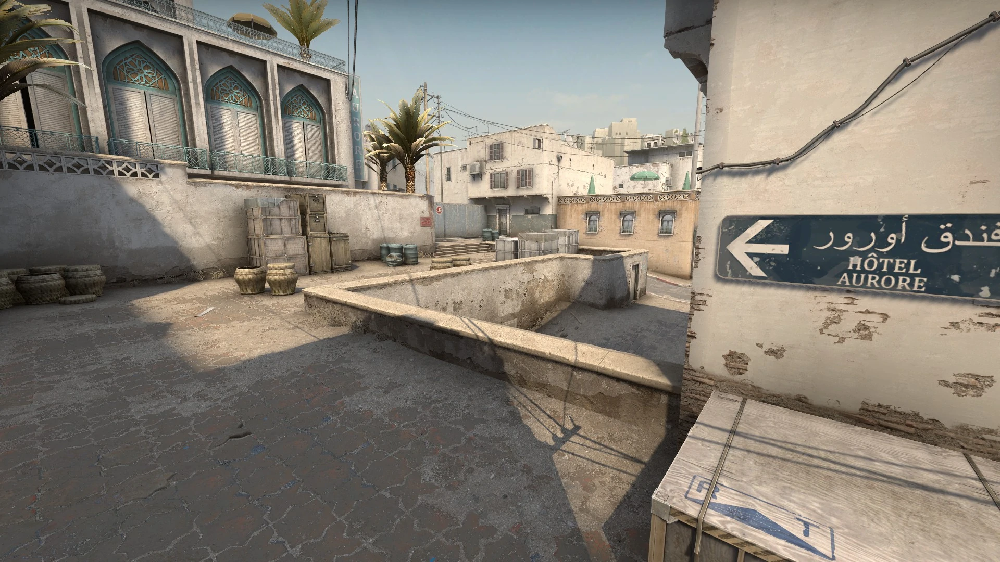

Counter-Strike: Global-Offensive este al patrulea joc din seria de jocuri multiplayer Counter-Strike de tip First-Person Shooter (FPS). Counter-Strike a apărut, la început, ca o modificare pentru jocul Half-Life. Acest mod a fost transformat, mai apoi, într-o serie unică de jocuri. Această serie a fost împărțită, de-a lungul timpului, în mai multe versiuni: Counter-Strike, Counter-Strike: Condition Zero, Counter-Strike: Source și Counter-Strike: Global-Offensive.
Valve Corporation este compania care a ajutat cel mai mult în dezvoltarea seriei de jocuri Counter-Strike; Valve a fost principalul factor în dezvoltarea și publicarea fiecărei versiuni a acestei serii.
Gameplay: Două echipe opuse sunt puse la dispoziția jucătorului: teroriștii și anti-teroriștii. Teroriștii au obiectivul de a planta o bombă iar anti-teroriștii trebuie să dezamorseze bomba. Există unele cazuri speciale unde teroriștii au obiectivul de a păstra ostatici iar anti-teroriștii trebuie să îi salveze de la teroriști.
La începutul unei runde, jucătorul are timp câteva secunde să își cumpere armament și echipamente, iar apoi trebuie să completeze obiectivul respectiv pentru a câștiga runda cu succes.
Competitive:
Acesta este modul clasic de joc care a făcut Counter-Strike popular. Două echipe a câte cinci jucători concurează într-un meci care folosește regulile concurențiale standard Counter-Strike. Jucătorii trebuie să achiziționeze armuri, arme, dezamorsare sau truse de salvare și să își gestioneze economia în joc pentru a-și maximiza șansele de succes. Prima echipă care câștigă 16 runde în modurile de joc Bomb Defusal sau Hostage Rescue câștigă meciul.
Wingman:
Acest mod de joc se joacă în numai 4 jucători. Jucătorii câștigă un grup de abilități exclusiv pentru Wingman și joacă folosind setul de reguli Competitive Bomb Defusal. Se pot cumpăra arme, armuri și truse de dezamorsare, într-un efort de a planta bomba sau de a apăra locul bombei.
Casual:
În modul Casual, jucătorii primesc automat armuri și truse de dezamorsare a bombei, se joacă cu o economie simplificată, iar daunele către echipă sunt dezactivate.
Deathmatch:
Acest mod de joc este un fel de Casual dar cu ritm mai rapid. După spawnare, jucătorii au o perioadă limitată de timp pentru a cumpăra arme la alegere și pentru a ataca inamicul. Uciderile cu arme diferite valorează puncte diferite, iar pe tot parcursul meciului jucătorii vor primi puncte bonus pentru realizarea uciderilor cu armele selectate.
Cea mai populară hartă din joc este Dust II. Ea a rămas în joc de la lansarea acestuia și până în ziua de astăzi.
